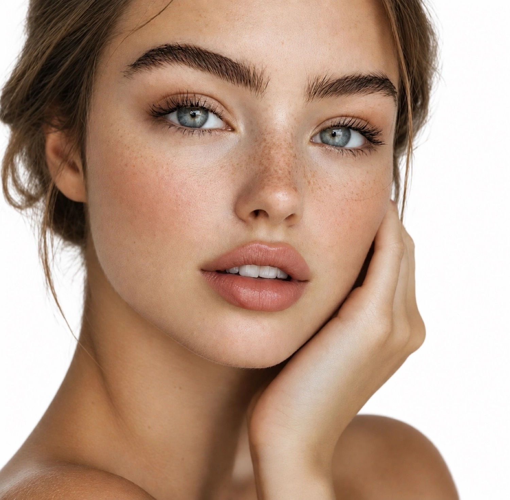
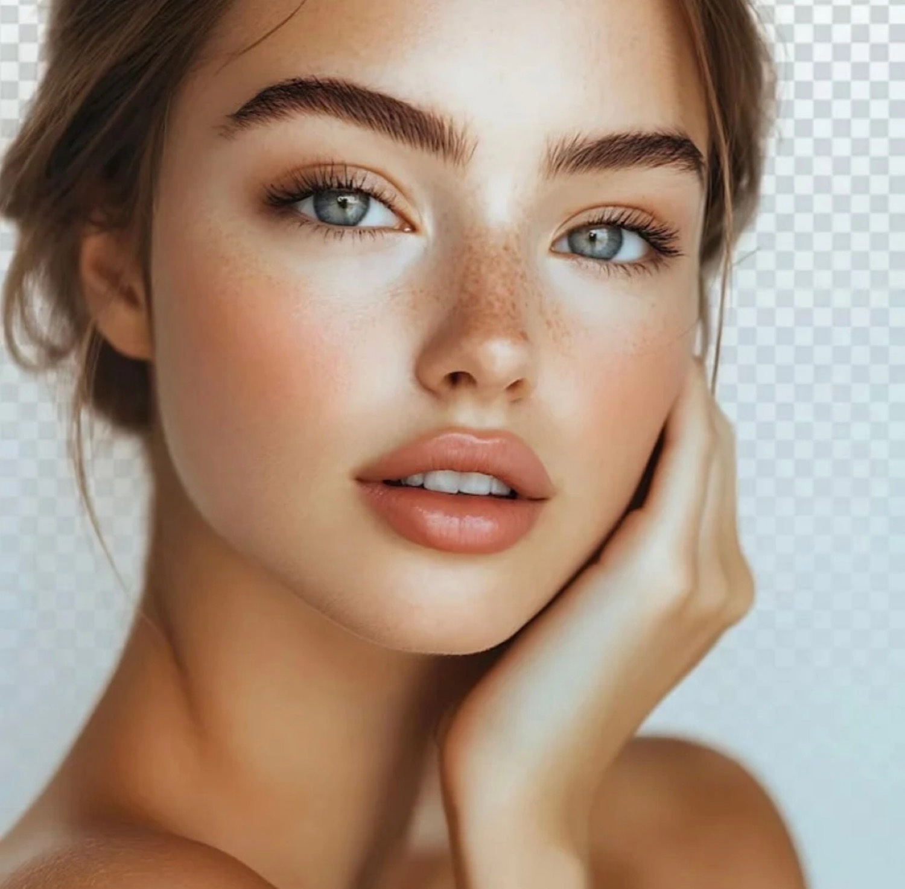

Портретная ретушь
Задачи: ретушь кожи, устранение блюра, улучшение качества изображения, более качественный макияж.
Инструменты: Photoshop, ChatGPT
Результат: чистое, чёткое лицо с естественной текстурой кожи и акцентированным макияжем. Фото готово к использованию в коммерческих и портфолио-проектах.